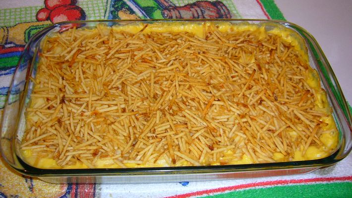

Fricasse de Frango

Descricao
Uma receita de travessa deliciosa. Fica bem cremoso e crocante
Ingredientes
- 1 lata de creme de leite
- 1 lata de milho verde
- 1 copo de requeijão cremoso
- 100 g de azeitona sem caroço
- 2 peitos de frango desfiado
- 200 g de Mussarela fatiada
- 100 g de batata palha100 g de batata palha100 g de batata palha100 g de batata palha100 g de batata palhav
- 1 pitada de sal
Passos
-
Bata no liquidificador o milho, o requeijão, o creme de leite e a água.
-
Refogue o creme do liquidificador com o frango desfiado, as azeitonas e o sal até ficar com uma textura espessa.
-
Coloque o refogado numa assadeira, cubra com mussarela e espalhe a batata palha por cima.
-
Leve ao forno até borbulhar. Sirva com arroz branco.